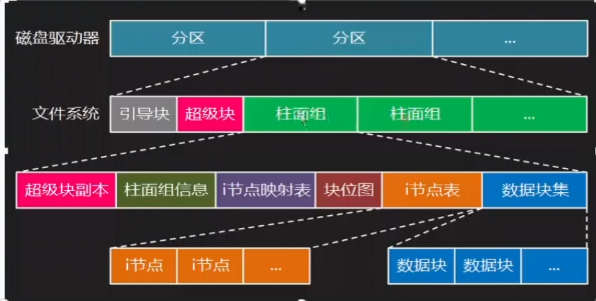
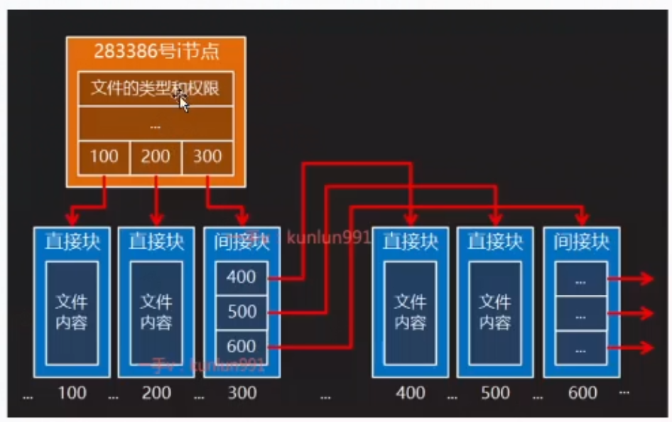
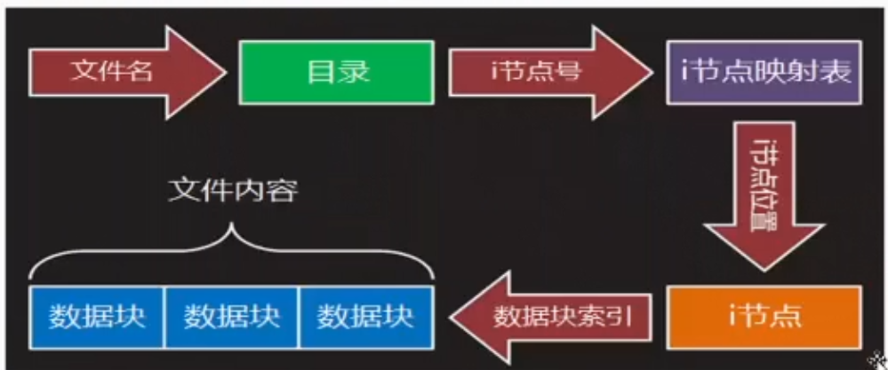
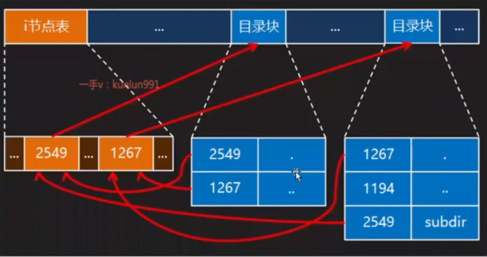
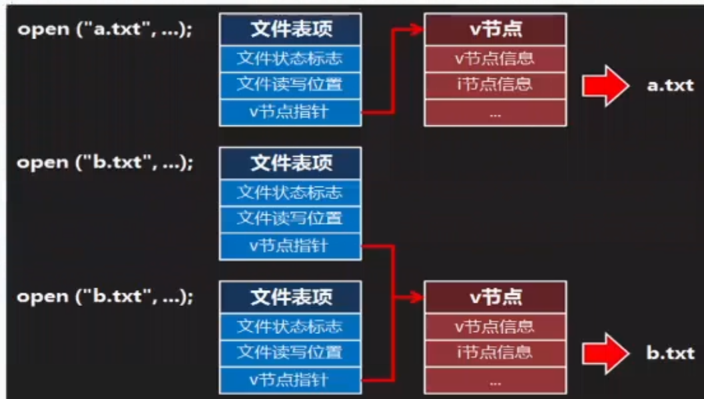
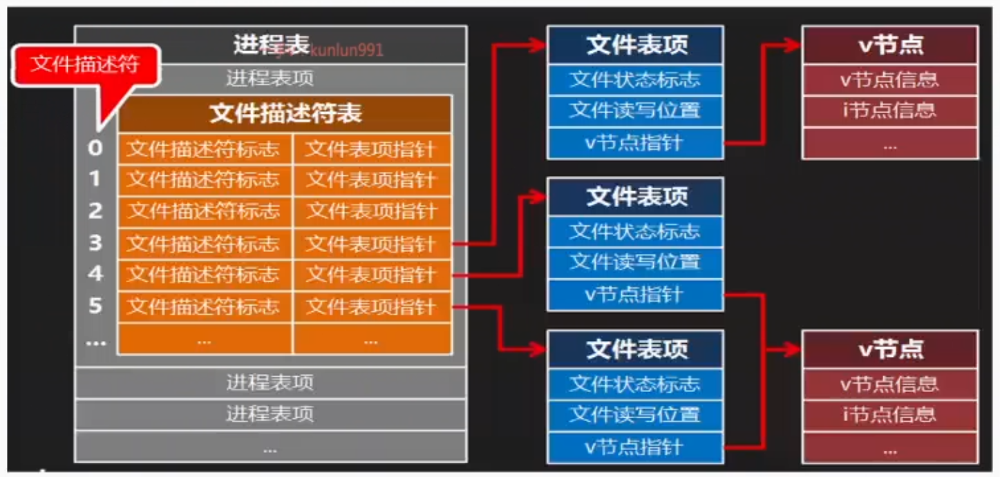

文件系统
文件系统的物理结构
柱面，柱面组，分区和磁盘驱动器
- 硬盘中,不同盘片相同半径的磁道所组成的圆柱称为柱面(Cylinder)。整个硬盘的柱面数与每张盘片的磁道数相等
- 硬盘中的每个扇区可由以下三个坐标唯一确定
· 磁头号:确定哪张盘面(一张盘片有两个盘面各对应一个磁头)
· 柱面号:确定哪条磁道
· 扇区号:确定哪个区域
- 若干连续的柱面构成一个柱面组
- 若干连续的柱面组构成一个分区
- 每个分区都建有独立的文件系统
- 若干个分区构成一个磁盘驱动器
文件系统的逻辑结构
一个磁盘驱动器被划分成一到多个分区,其中每个分区上都建有独立的文件系统,每个文件系统包括
- 引导块:计算机加电启动时;ROM BIOS从这里读取可执行代码和数据,以完成操作系统自举
- 超级块:记录文件系统的整体信息,如文件系统的格式和大小,i点和数据块的总量、使用量和剩余量等等
- 若干柱面组,其中每个柱面组包括
· 级块副本:同上
· 柱面组信息:柱面组的整体描述
· i节点映射表:i节点号与i节点磁盘位置的对应表
i节点
即索引节点（index node,inode）
- 磁盘中的每个文件或目录都有唯一的一个的i节点与之对应
- 每个i节点都有唯一的编号即i节点号,通过i节点映射表可以查到与每个节点号相对应的i节点在磁盘上的存储位置
- 文件名和i节点号的对应关系记录在该文件所在目录的目录文件中,目录文件中的一条这样的记录就是一个硬链接
- ls-i命令可以查看文件的i节点号
- i节点的具体内容包括
· 文件类型和权限
· 文件的硬链接数
· 文件的用户和组
· 文件的字节大小
· 文件的最后访问时间、最后修改时间和最后状态改变时间
· 文件数据块索引表
数据块（data block）
一般为512/1024/4096字节
- 直接块:存储文件的实际内容数据
· 文件块:存储普通文件的内容数据
· 目录:存储目录文件的内容数据
- 间接块：储存下级文件数据块索引表

通过i节点索引数据块

文件访问流程
- 针对给定的文件名,从其所在目录中可以得到与之对应的节点号,再通过i节点映射表可以查到该i节点在磁盘上的具体位置,读取i节点信息并从中找到数据块索引,进而找到相应的数据块,最终获得文件的完整内容。

文件类型
普通文件
- 操作系统内核并没有对并发文件访问强加任何限制,不同的进程能够同时读写同一个文件,并发访问的结果取决于独立操作的顺序,且通常是不可预测的
- 一个文件包括两部分数据,一部分是元数据,如文件的类型、权限、大小、用户、组、各种时间戳等,存储在i节点中,另一部分是内容数据,存储在数据块中
目录文件
- 系统通过i节点号唯一地标识一个文件的存在,但人们更愿意使用有意义的文件名来访问文件,目录就是用来建立文件名和i节点号之间的映射的
- 目录的本质就是一个普通文件,与其它普通文件唯一的区别就是它仅仅存储文件名和i节点号的映射,每一个这样的映射,用目录中的一个条目表示,谓之硬链接
- 既然目录也是文件,那么它同样也有自己的i节点,每个目录的i节点号和它的文件名(目录名)之间的映射,记录在它的父目录中,以此类推,形成了一棵目录树
- 根目录的i节点在i节点表中的存储位置是固定的,因此即使没有父目录,根目录也能被正确检索
- 当系统内核打开类似“/home/tarena/unixc/day01.txt"这样的路径时,它会从根目录开始遍历路径中的每一个目录项来查找下一项的i节点号。根目录的i节点可以直接拿到,这样就可以在根目录中找到home目录的i节点号,然后在home目录中找到tarena目录的节点号,再在tarena目录中找到unixc目录的i节点号,最终在unixc目录中找到day01.txt文件的i节点号并打开该文件
- 如果路径字符串的第一个字符不是“/”,则表示相对路径,基于相对路径的路径解析从当前工作目录开始
- 每个目录中都有两个特殊的条目“”和“”分别映射该目录本身和其父目录的i节点号,根目录没有父目录,故其““和“”一样都映射到根目录本身

符号链接文件
这个文件中保存着对应文件的绝对路径，相当于windows上面的快捷方式。
- 符号链接文件看上去象普通文件,每个符号链接文件都有自己的i节点和包含被链接文件完整路径名的数据块
- 相比于硬链接,符号链接的解析需要更大的系统开销,因为有效地解析符号链接至少需要解析两个文件,符号链接文件本身和它所链接的文件
- 文件系统会为硬链接维护链接计数,但不会为符号链接维护任何东西,因此相较于硬链接符号链接缺乏透明性
创建方式
硬链接
在对应的i节点，下创建了一个新的名，因此硬链接与原文件的i节点编号相同。创建硬链接后，i节点对应的名+1
创建方式
特殊文件
特殊文件是以文件形式表示的内核对象,具体包括
- 本地套接字:套接字是网络编程的基础,本地套接字是其面向本机通信的一个变种,它需要依赖文件系统中的一种特殊文件 -- 本地套接字文件
- 字符设备:设备驱动将字节按顺序写入队列,用户程序从队列中按其被写入的顺序将字节依次读出,如键盘
- 块设备:设备驱动将字节数组映射到可寻址的设备上,用户程序可以任意顺序访问数组中的任意字节,如硬盘
- 有名管道:有名管道是一种以文件描述符为信道的进程间通信(IPC)机制,即使是不相关的进程也能通过有名管道文件交换数据
通过ls - l 命令可以查看文件的类型
- -：普通文件
- d：目录
- s：本地套接字
- c：字符设备
- b：块设备
- l：符号链接
- p：有名管道
文件的打开于关闭
open
是fopen的底层函数
功能：打开已有的文件或创建新文件
参数: pathname 文件路径
flags 状态标志,可以以下取值
参数:mode 权限模式
仅在创建新文件时有效,可用形如0XXX的三位八进制数表示,由高位到低位依次表示拥有者用户、同组用户和其它用户的读、写和执行权限,读权限用4表示,写权限用2表示,执行权限用1表示,最后通过加法将不同的权限组合在一起
返回值:所返回的一定是当前未被使用的,最小文件描述符
调用进程的权限掩码会屏蔽掉创建文件时指定的权限位,如创建文件时指定权限0666,进程权限掩码0022,所创建文件的实际权限为:0666&~0022=0644(r w-r -- r -- )
通过umask查看权限掩码，umask 0000更改权限掩码
也可以使用chmod来改文件权限
close
- 功能：关闭处于打开状态的文件描述符
- 参数：fd 处于打开状态的文件描述符
文件的内核结构
一个处于打开状态的文件，系统会为其在内核中维护一套专门的数据结构,
保存该文件的信息,直到它被关闭。
v节点与v节点表
文件的元数据和在磁盘上的存储位置都保存在其节点中,而i节点保存在分区柱面组的节点表中,在打开文件时将其i节点信息读入内存,并辅以其它的必要信息形成一个专门的数据结构。势必会提高对该文件的访问效率,这个存在于进程的内核空间,包含文件i节点信息的数据结构被称为v节点。多个v节点结构以链表的形式构成v节点表。
文件表项与文件表
由文件状态标志(来自open函数的flags参数)、文件读写位置(最后一次读写的最后一个字节的下一个位置)和v节点指针等信息组成的内核数据结构被称为文件表项。通过文件表项一方面可以实时记录每次读写操作的准确位置,另一方面可以通过v节点指针访问包括该文件各种元数据和磁盘位置在内的i节点信息。多个文件表项以链表的形式构成文件表。
v节点与文件表项

- 由于同一个文件可以被打开多次，那么存在多个文件表项共用同一个v节点。当该文件的所有文件表项全部被释放，其v节点才会被释放。
文件描述符
- 由文件的内核结构可知,一个被打开的文件在系统内核中通过文件表项和v
节点加以标识。有关该文件的所有后续操作,如读取、写入、随机访问,乃至关闭等,都无一例外地要依赖于文件表项和v节点。因此有必要将文件表项和v节点体现在完成这些后续操作的函数的参数中。但这又势必会将位于内核空间中的内存地址暴露给运行于用户空间中的程序代码。一旦某个用户进程出现操作失误,极有可能造成系统内核失稳,进而影响其它正常运行的用户进程。这将对操作系统的安全运行造成极大的威胁。
- 为了解决内核对象在可访问性与安全性之间的矛盾,Unix系统通过所谓文件描述符,将位于内核空间中的文件表项间接地提供给运行于用户空间中的程序代码
- 为了便于管理在系统中运行的各个进程,内核会维护一张存有各进程信息的列表,谓之进程表。系统中的每个进程在进程表中都占有一个表项。每个进程表项都包含了针对特定进程的描述信息,如进程ID、用户ID、组ID等,其中也包含了一个被称为文件描述符表的数据结构
- 文件描述符表的每个表项都至少包含两个数据项 -- 文件描述符标志和文件表项指针,而所谓文件描述符,其实就是文件描述符表项在文件描述符表中从0开始的下标

其中0，1，2对应特殊的文件
- 0 -> 键盘 -> scanf
- 1 -> 显示器 -> printf
- 2 -> 显示器 -> perror
重定向
将0，1，2对应的文件更改后，就能更改标准输入输出读取或输出的位置。
在shell中的重定向